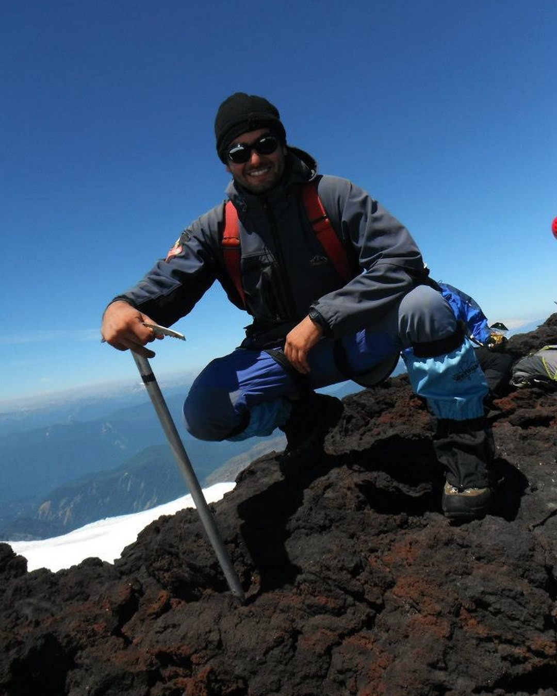

Somos un servicio de turismo de aventura, con el sueño de mostrarte la belleza natural de Chile. Siendo éste un país marítimo y montañoso, de inmensa belleza natural y con clima, vegetación y fauna amigable, lo convierten en un destino ideal para el ecoturismo. Al mismo tiempo nos interesa incentivar la vida al aire libre, el goce, el contacto y el respeto por la naturaleza realizando trekkings (por el día / no requieren experiencia previa. Pero si capacidad física y una actitud responsable y de seguridad). Para los trekkings nos enfocamos en la pre-cordillera de los Andes, cordillera de la Costa y borde costero de la V región de Valparaiso.
Cerro Alto del Naranjo (1.800 m.s.n.m.) es una buena opción para quienes desean contactarse con la naturaleza sin alejarse de la ciudad. Durante gran parte del trayecto apreciaremos por un lado, la inmensa Cordillera de los Andes, y por otro, una magnífica vista de Santiago hasta la Cordillera de la Costa; además de apreciar la flora y fauna nativa que caracteriza a la zona central de Chile, como por ejemplo el Chagual y el Guayacán; el Cóndor y el Águila chilena.
El trekking de Río Clarillo es una buena opción para quién desea aventurarse en la naturaleza precordillerana de la zona central, caracterizada por bosques de Peumos, Quillayes y Guayacanes, entre otros; acompañados por las aguas del Río Clarillo y sus impresionantes paisajes montañosos.
El trekking al Cerro El Roble, con sus 2.222m.s.n.m., es la cumbre más alta de la Cordillera de la Costa, siendo una buena alternativa para salir de Santiago, a tan solo 71 km. En su trayecto atravesaremos bosques de Robles acompañados de una amplia vista del verde valle de Caleu y al llegar a la cumbre nos cautivaremos con una imponente vista de la Cordillera de los Andes, en la que podremos distinguir su montaña más alta, el Aconcagua.
El trekking “Quintay-Tunquén” es una buena alternativa para quienes desean realizar una caminata en terreno relativamente plano junto al mar, y a la vez explorar frondosos bosques de Pinos y verdes prados; siempre acompañados de la admirable vista del Océano Pacifico.
Ya he probado todas las excursiones de 'Club Puma Trekking', y les puedo asegurar que han sido las mejores experiencias de toda mi vida, son viajes realmente emocionanes e inolvidables. No te los pierdas!!
INSCRIBETE EN NUESTRAS EXCURSIONES DANDO CLICK EN EL BOTON